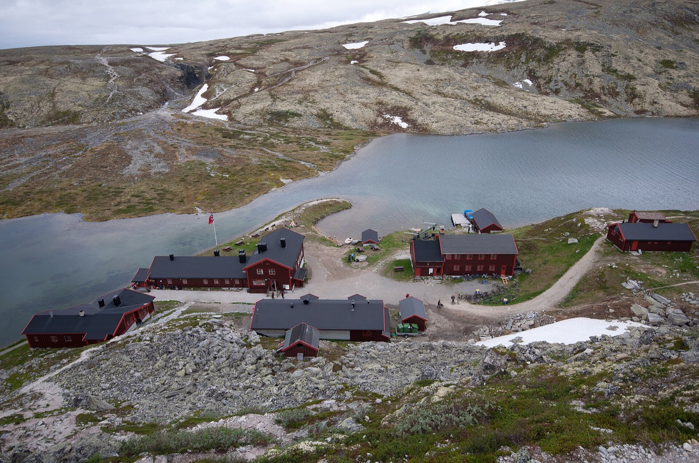
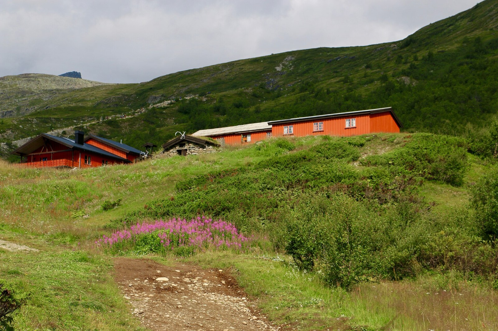
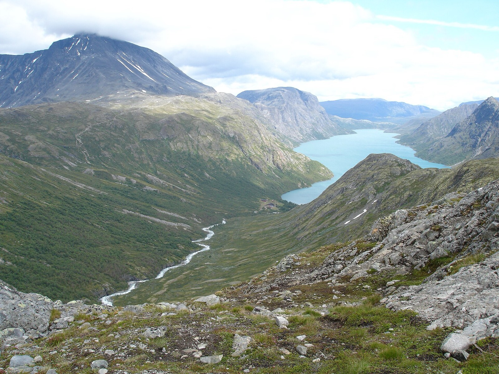
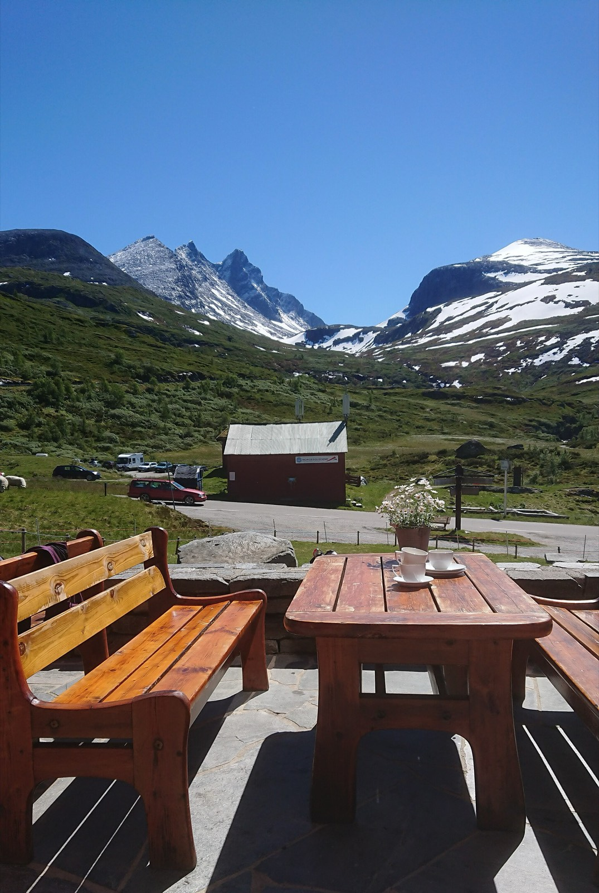

1Aug 7
Travel
Land in Oslo
Flights from the US usually land in the early evening, so keep this day light: collect the car, shop for dry goods and gas canisters (you can't fly with them), and sleep in Oslo or near the airport.
 Photo: Silverkey, CC BY-SA 4.0
Photo: Silverkey, CC BY-SA 4.0
Eight hut nights across Rondane and the length of Jotunheimen, from Besseggen to the Hurrungane peaks, with one easy evening on a trout river at each end.
Norway does something rare: it lets you walk all day above the treeline, sleep in a warm staffed lodge with a hot dinner and a drying room, and wake up to do it again, with no tent and no stove. The Norwegian Trekking Association (DNT) has run this network for over 150 years, and the red-painted T on the cairns will keep you honest in fog.
The fishing is the side dish: the valley rivers at either end, the Lågen and Otta at the start and the Bøvra at Lom, are wadeable, gin-clear and hold wild brown trout and grayling that rise to a dry fly. Licences are sold online by the day, and nobody is guarding a beat. The rest of the trip stays above the treeline.
Dates are Aug 7–20, 2027 (this is being planned in Nov 2026). Flying in and out of Oslo, renting a car. Two experienced walkers, comfortable with 6–8 hour days. Everything marked VERIFY came from memory or thin sources and should be confirmed before you book. See Verify first.
Staffed DNT huts generally run from late June to early September, so mid-August sits comfortably in season. Snowfields on the high passes have mostly gone, the long evening light is still generous, and the worst of the mosquito season in the valleys has usually passed, though black flies and midges (knott) can linger near water. Expect a mix: a few glorious clear days, a couple of wet ones, and fog on the plateau at the worst moment.
The trade-off is crowds. Besseggen and the Gjende huts are the busiest places in the country in July and the first half of August. Crowds may thin once Norwegian schools restart in mid-August VERIFY. Book early either way, and consider walking against the grain.
On the fishing side, high summer means low, clear water and wary fish. Fish early and late, go small and light on the tippet, and expect the best dry-fly action at dusk when caddis come off.
The shape: Rondane (two huts) → Gjende and the heart of Jotunheimen → the Hurrungane peaks → Lom. Eight hut nights in a row, almost no driving, and just two short fishing sessions at the ends. The car stays parked at Lom while you walk.
Pins are place locations, and the lines are straight connections between them, not the real trail or road. Click the map to enable scroll zoom. Without JavaScript, the day-by-day list below has everything.
Red is a hiking day, blue a fishing day, grey travel. Tap a day to jump to it.
Flights from the US usually land in the early evening, so keep this day light: collect the car, shop for dry goods and gas canisters (you can't fly with them), and sleep in Oslo or near the airport.
Drive north on the E6 to the Sel valley near Otta, about four and a half hours VERIFY, with lunch in Lillehammer. Optional: an evening on the Lågen or the Otta, the first of just two fishing sessions, with a day licence (fiskekort) from inatur.no. Sleep near Otta.

Drive to the Rondane trailhead and walk to Rondvassbu, the largest staffed hut in the park, beside the lake Rondvatnet. An easy first day under the shadow of Rondeslottet. Check the current trailhead, toll road and boat arrangements on ut.no VERIFY.

Either a summit day on Rondeslottet (2,178 m, a long day) or the traverse towards Bjørnhollia, another staffed hut. Rondane's rounded skyline gives you huge views for relatively little exposure. Reindeer are common.

Walk out to the road in the morning and take a pre-booked taxi back to the car. Drive about two hours to Lom VERIFY, leave the car there for the rest of the hut chain, and take a bus or taxi up to Gjendesheim at the east end of Lake Gjende (check the timetable VERIFY). Sleep at Gjendesheim.
The famous ridge, with the lake Gjende (a vivid green) on one side and Bessvatnet (deep blue) on the other. Allow 6–8 hours. Start early to beat the queues at the scrambly bits. Sleep at Memurubu.

Take the lake boat or walk the trail along the north shore. Gjendebu sits at the west end, at the mouth of the Memurudalen and Svartdalen valleys. A short day on purpose: rest, wash, and be glad of it.

Up and over into the heart of the park towards Glitterheim, below Glittertind. Roughly 5–7 hours; check time and route on ut.no VERIFY.
The high-country finale of the eastern chain. Spiterstulen is the base for Galdhøpiggen (2,469 m, Norway's highest). The normal summit route crosses a glacier, so go with a guide if you want the top VERIFY. A sauna on some evenings VERIFY.
Into the Hurrungane, the jagged peaks in the west of the park. Skogadalsbøen is a staffed lodge in the Skogadalen valley. This is the most remote leg: check route, times and any river crossings on ut.no before you book VERIFY.
A shorter day down towards the Sognefjellsvegen road and Turtagrø, a historic mountain hotel at the foot of the Hurrungane peaks. A proper bed and a hot dinner to end the chain VERIFY.

A morning to spare: stretch your legs in the Hurrungane, or walk to Fannaråkhytta if the sky is clear (a long day VERIFY). Then take the bus to Lom (stave church, bakery, outdoor shop), collect the car, and fish the Bøvra or the Otta in the evening. Sleep in Lom.

Drive back down Gudbrandsdalen, about five to six hours VERIFY. Sleep in Oslo.
Return the car, dry the waders, and disinfect or dry the fishing gear before you leave (see Fishing).
This plan has almost no slack: days 3 to 11 are a chain. If a day is socked in, ask the hut staff before you set out, and treat days 7 and 11 as your buffer. Rondane and Jotunheimen both turn dangerous in low cloud, wind and sleet. If you lose a whole day, end at Spiterstulen on day 9 and take the bus to Lom.
| Variant | What changes | Trade-off |
|---|---|---|
| Shorter chain | End at Spiterstulen on day 9 and take the bus to Lom, skipping Skogadalsbøen and Turtagrø. | Two spare days for weather, a guided Galdhøpiggen summit, or a longer stay in Oslo. You lose the Hurrungane. |
| Guided Jotunheimen | Book a guided or packaged hut trek for days 6–11 (several operators sell these), and keep the rest as is VERIFY. | Easier logistics and local knowledge, less flexibility, higher cost. |
| Guided summit | On a spare day, hire a guide for Galdhøpiggen from Spiterstulen. The normal route crosses a glacier VERIFY. | A summit day, at an extra cost, and only with a spare day in the schedule. |
| Hardangervidda | Replace Rondane with Rauhelleren and Sandhaug huts on the great plateau, and fish the lakes. | More trout lakes than rivers, farther from Oslo, a lot more wind. |
DNT cabins come in three flavours: staffed (beds, dinner, breakfast, packed lunch, a shop for chocolate and a few essentials), self-service (bring your own food, use the provided stock and pay by the honour system), and unstaffed (basic). In August, staffed huts are a joy and fill up.
Staffed DNT huts run on a set menu: a hot multi-course dinner served at a fixed time, a buffet breakfast, and a packed lunch you make yourself from the breakfast spread. Traditional hut menus lean on meat, fish and dairy (reindeer stew, salmon, cheese, brunost), so a vegetarian needs to plan rather than hope.
Searches turned up no published vegetarian policy for Rondvassbu, Bjørnhollia, Gjendesheim, Memurubu, Gjendebu, Glitterheim, Spiterstulen or Skogadalsbøen. DNT does say staffed cabins serve a three-course dinner built on local ingredients, and Norwegian huts generally cook for guests who arrive unannounced. Whether any given hut can do a proper vegetarian dinner, and how much notice it wants, is VERIFY hut by hut.
Carry a modest emergency stash for the eight hut nights (days 3–10) and the hotel on day 11 so a mediocre dinner never becomes an empty stomach:
Self-service huts (Rondane has several) mean cooking your own, which is easy for a vegetarian: they stock basic dry goods you pay for on the honour system, and you bring the rest.
Valley days are easy. Otta and Lom have supermarkets (Coop, Rema 1000 and Kiwi are everywhere) with plenty of vegetarian staples, and most towns have at least one pizzeria or café with a meat-free option. Stock the backup larder on day 1 in Oslo, where vegetarian choice is wide.
If one of you doesn't eat fish, nothing about the plan changes: catch-and-release with barbless hooks is the norm, and rules for taking fish out of the country are tight anyway. If the other does want a trout dinner, ask a hut or guesthouse whether they will cook your catch before you assume it.
Brown trout (ørret) and grayling (harr), mostly wild, and both willing to take dry flies. The sweet spot is a long, clean drift on a cloudy afternoon or at dusk. Grayling fishing improves in September and October, so an August trip will find them a bit less showy but still present.

| Water | Where | Notes |
|---|---|---|
| Gudbrandsdalslågen & Otta | Otta / Sel (day 2) | The classic central valley system. Trout and grayling. |
| Bøvra / Otta at Lom | Ottadalen (day 12) | Glacier-fed water can run milky and cold on hot afternoons. |
Detailed river-by-river reports for these specific stretches were not found in the research for this plan. Ask the local outdoor shop in Otta or Lom which beats are fishing, what is hatching, and where the licence zones are.
The plan has one real evening in Oslo, the night of day 13 (Aug 19), plus whatever is left of the arrival and departure days. If you want more, arrive a day early.
These are tips passed on by a friend of a friend, not checked by us. Treat them as a shortlist, and check opening hours, menus and vegetarian options before you plan around any of them.
Fly into Oslo (OSL) and rent a car for the drive up Gudbrandsdalen and the shuttle between Rondane and Jotunheimen. The car sits parked at Lom while you walk the chain, so you rely on a taxi at the Rondane walk-out and on buses at both ends of Jotunheimen; timetables are thin and seasonal. Book the car, the taxi and the boat times once the huts are fixed.
Norway's allemannsretten lets you walk and camp on uncultivated land, but you should keep well away from houses, close gates and take your rubbish with you. Fishing is not covered by it: you still need a licence. As a fallback if a hut falls through, the rule of thumb is a tent at least 150 m from the nearest inhabited house, for no more than two nights in one spot VERIFY. That means carrying tent gear, so it is a last resort.
One date is firm: the Gjende lake boat operator says booking for its 2027 season opens on 1 December 2026 (season June 5 to Sept 25, per gjende.no; re-check). The date DNT opens summer 2027 hut bookings was not found. Treat it as the first thing to chase.
| When | Do |
|---|---|
| Nov 2026 (now) | Join DNT. Check passports. Read ut.no for Rondane and Jotunheimen and settle the route. Decide whether fish counts for the vegetarian. |
| Dec 1, 2026 | Gjende boat booking opens. The boat is optional (day 7 can be walked), so book it once the huts are fixed, but check timetables that day. |
| Dec 2026 | Find the 2027 hut booking-open date: look on hyttebestilling.dnt.no and each cabin's ut.no page, or ask DNT or the hut. Put it in the calendar, with a reminder a week before. VERIFY |
| The day bookings open (likely winter or early spring) | Book huts in this order: Gjendesheim and Memurubu (the Besseggen nights), then Gjendebu, Glitterheim, Spiterstulen and Skogadalsbøen, the Turtagrø hotel, then Rondvassbu and Bjørnhollia. Put the vegetarian request in the booking notes. Some huts, Memurubu in particular, may be privately run and need booking outside the DNT portal VERIFY. |
| Feb–Mar 2027 | Book flights into Oslo and the rental car (free-cancellation fares if you can). Book travel insurance that covers hiking and mountain rescue. |
| Apr 2027 | Arrange the Rondane walk-out taxi, the Lom to Gjendesheim and Turtagrø to Lom buses or taxis, and the first and last Oslo nights. Order or replace gear, and buy the fly-fishing basics. |
| May 2027 | Break in boots, run overnight pack tests, and decide how to disinfect or replace waders and boots. Re-check hut bookings and any changes to opening dates. |
| June 2027 | Email each hut to confirm the vegetarian dinners in writing. Confirm huts have opened on schedule. |
| Early–mid July | Start watching weather and snow reports. Confirm taxis, buses and the boat. |
| Late July to early August | Buy fishing licences on inatur.no (or in the valley), check river levels and trail conditions, disinfect fishing gear, and pack the backup larder. |
| Aug 7, 2027 | Land in Oslo. |
The research behind this page found good general sources on huts and licences, but no river-by-river August reports, no current hut timetables and no confirmed 2027 prices. Treat the itinerary as a well-shaped draft, not a reservation.
A friend of a friend passed on a Lofoten guide and some personal tips. Lofoten is not part of this plan: it is far north, built around day hikes and the coast rather than huts, and the midnight sun there runs from about May 28 to July 14, so mid-August nights are dark again. It makes a good trip of its own. These notes are here so they are not lost.
Lofoten guide by Helene Myhre (@helenemoo), 94 pages, © 2022, with a linked Google Maps list of its spots. It is her work, so it is not reproduced here; the PDF stays in Downloads.
Second-hand, so unverified. Places that also appear in the guide are marked with an asterisk: that confirms the name only, not the details.
| Type | Picks |
|---|---|
| Hikes | Reinebringen*, a short and steep climb with stone steps; Ryten* and Kvalvika* beach, a ridge walk over to a remote beach; Mannen* and Uttakleiv* for the view over Haukland* beach; Offersøykammen*; Håen on Værøy (the island Værøy* is in the guide). |
| Villages | Reine*, Å, Hamnøy*, and Henningsvær*, with thrift shops and a few days of wandering. |
| Eat | Fish soup and bread at Anita's*; Furu Café*; brown cheese at Aalan Gård*; a cinnamon bun everywhere. |
| Getting there | A ferry to Værøy from the south of Lofoten, said to be free for foot passengers. A seat reservation is recommended because it can fill up. VERIFY |
| Also | Local saunas and cold plunges after hikes; the guide lists sauna spots. |
The friend also recommended a local guide author's Instagram for hike and food tips, and offered to share photo locations from their own pictures.


.jpg){kind=link}